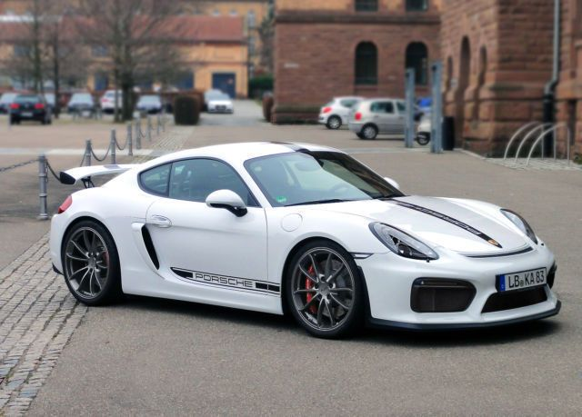

This is a test to see how the workflow goes, this is the first line of text written
This page describes the pros and cons of the bastard child of within the Porsche family's line-up of sports coupes.
The Porsche Cayman GT4 is the first of its kind. Porsche fans had been longing for Porsche's motorsports division aka "GT" division to get their hands on a 981 Cayman, and turn it into a track-capable mid-engine rear-wheel-drive lightweight sports coupe.
Finally, Porsche had listened to its die hard fans and released the first ever Cayman with a "GT" badge on it.
This gem is powered by the same engine which powers the 991 911 Carrera S, and/or the 4S. However the engine had
been tuned to have less BHP compared to the unit powering the 911. Nonetheless, the GT4 still puts out 380bhp
@7400rpm which in turn translates to 283bhp per tonne, not too shabby, at all. What's more enticing is the fact
that this beautiful piece of engineering is not entirely unreasonably priced, especially when compared to its
competitors. For example, an M4 GTS may end up costing more, but the end result may not be as pure as the one you
get in the GT4, with its naturally aspirated 3.8L displacement flat 6 that screams to near 8000rpm. Another example
of competitor would be a Lotus Exige S. It is also a MR setup, lightweight track-ready sports coupe, it is also
cheaper. However, in return you get a lot less, much less. The interior in the exige will be multiple notches
below that of the GT4, in any given aspects. The Exige is also much less comfortable on the street as a result of
the less flexible and adaptive suspension, the consequence is a harsher ride on the street. One may argue that Exige's
setup is plausible because it is "focused", but I say that is just the result of developing products under different
philosophies.
PROS:
CONS:
below is an image of the gt4
below is the second image